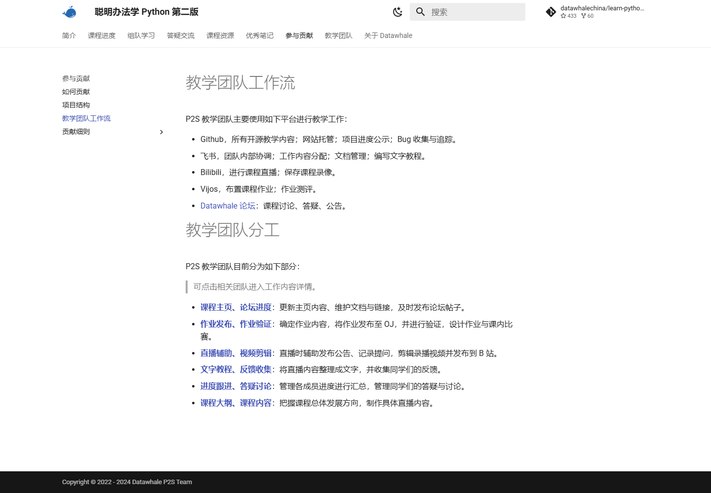

P25-datawhale-o1 · 官方内容
既有all-in-rag正文记录课程对象、前置能力、代码、数据和章节，部分内容仍规划或优化。
发布日期未标 · 观察：2026-09-09
复用site/lib/content-depth.json，原读2026-09-09；未执行代码。
Datawhale 的用户记录包括运行教材、报告失败和补充勘误。all-in-rag 的5位不同发帖者支持“RAG课程自学与复现”这一任务画像，职业分布仍未知。教材包含代码实践，结课、独立应用和就业成果尚无跟踪证据。
| 内容使用者 | 内容供给者 | 付款方 |
|---|---|---|
| 按章节读课程、准备环境和运行例子的学习者；未确认学历、职业。 | 提供勘误、运行对照和教材维护的贡献者，与学习者可重叠。 | 企业生态合作方可能投入算力或专家时间；普通学习者付会员费与现金赞助没有证据。 |
仅all-in-rag教材。4位公开发帖者有运行/排错经历，另1位只表示正在学习，不能作为同一窄任务的第五点。 · 候选任务画像：4个明确运行或排错观察点；另有1个一般学习线索
| 观察点 | 群体占比 |
|---|---|
| 4个可区分用户点 | 未知 |
| 问题 | 具体材料 |
|---|---|
| 任务 | 从章节说明进入环境配置、模型调用和检索示例，得到能解释的结果。 |
| 触发 | 想系统补RAG能力，或当前练习运行失败。 |
| 希望取得的结果 | 自己的机器与输入能够跑通例子，理解输出为何符合问题。 |
| 困难 | 不知道还需自行配置模型授权。；环境初始化与教程说明存在落差。；外部模型变化使旧示例失效。 |
| 需要的内容 | 适用版本、授权前提、最小数据、预期输出与失败分支。 |
| 替代方法 | 直接读框架文档、其他开源教材或让大模型协助；具体迁移未核。 |
| 持续使用记录 | 匿名E仅称正在学、期待更新；另有4人具体运行反馈，没有完整结课或长期回访数据。 |
| 回访假设 | 继续下一章节或把例子改成自己的问题时返回教材。 |
| 付费记录 | 未见向Datawhale付款的自述；外部API需要授权不代表社区收费。 |
4位不同提交者；与p1中的3人重叠，不能相加为全站用户数。 · 有用户线索，候选画像
| 观察点 | 群体占比 |
|---|---|
| 4个可区分用户点 | 未知 |
| 问题 | 具体材料 |
|---|---|
| 任务 | 定位教程与环境或框架行为的差异，提供替代步骤和勘误依据。 |
| 触发 | 跑出错误结果、查到源码与说明不同，或找到能继续执行的替换。 |
| 希望取得的结果 | 自己的问题解决，后来的学习者不再踩同一个坑。 |
| 困难 | 问题可能来自教程、依赖版本或外部模型。；发了issue不保证教材已合并修正。 |
| 需要的内容 | 章节定位、最小复现、修改前后结果与维护状态。 |
| 替代方法 | 只在个人笔记保留修正，或转往框架问题区。 |
| 持续使用记录 | 匿名C明确说已实践环境解决办法，匿名D提供中文检索前后对照；未见核实的合并和后续用户复验。 |
| 回访假设 | 发现新错误或等待合并时继续贡献。 |
| 付费记录 | 无稿酬、分成或长期维护报酬证据。 |
官方hello-rocm联合学习项目；0个独立买方观察。 · 官方合作角色，候选画像
| 观察点 | 群体占比 |
|---|---|
| 0个可区分用户点 | 未知 |
| 问题 | 具体材料 |
|---|---|
| 任务 | 使学习者实际接触硬件和工具链，并留下案例。 |
| 触发 | 新技术需要开发者教程、适配和实践。 |
| 希望取得的结果 | 可复用材料与实际运行反馈。 |
| 困难 | 活动报名不能代替作业完成。；免费资源投入能否转成长期采用未知。 |
| 需要的内容 | 可完成的学习路线、算力条件、优秀作业标准与后续维护。 |
| 替代方法 | 自办开发者活动、官方教程或其他社区合作；为分析。 |
| 持续使用记录 | 6月共学安排与资源支持是官方规则；没有后续合作续期和采用追踪。 |
| 回访假设 | 看到可复用案例与真实问题，才有持续合作的理由。 |
| 付费记录 | 合作资源存在；现金交易和社区收入未知。 |
| 产品提供 | 内容形态 | 如何发挥作用 | 观察结果 | 剩余工作 |
|---|---|---|---|---|
| 分章节教材、代码、数据及前置能力说明。 | 课程仓库与附件。 | 让学习者按章节从解释进入实验。 | 5位发帖者至少发生阅读或运行行为；未证明课程完成。 | 初次成功仍受环境、授权和版本影响。 |
阅读与实际尝试
| 产品提供 | 内容形态 | 如何发挥作用 | 观察结果 | 剩余工作 |
|---|---|---|---|---|
| 公开反馈空间，容纳修改前后输出与替代实现。 | BM25检索反馈及中文分词对照。 | 把看似成功运行的问题变成可比对的结果差异。 | 匿名D展示修正后目标菜谱进入结果；属于作者自述实验，未独立复现。 | 是否合入教材、是否适用其他数据未知。 |
用户自述局部解决
| 产品提供 | 内容形态 | 如何发挥作用 | 观察结果 | 剩余工作 |
|---|---|---|---|---|
| 贡献与反馈流程、章节级issue。 | 替代模型建议、环境补充、源码勘误。 | 把学习者反馈送入维护入口。 | 已收到具体修正材料；当前读到的issue仍开放，不能当作已发布修复。 | 维护响应、合并时长与再次复验资料不足。 |
问题定位/修正提案
| 产品提供 | 内容形态 | 如何发挥作用 | 观察结果 | 剩余工作 |
|---|---|---|---|---|
| 带日程、资源和作业目标的联合共学。 | 学习营、教程与作品资格规则。 | 要求参与者通过实际学习产出材料。 | 只核实官方活动安排，6月活动已结束。 | 报名、完成、长期采用和商业回报不可互换。 |
官方机制
既有all-in-rag正文记录课程对象、前置能力、代码、数据和章节，部分内容仍规划或优化。
发布日期未标 · 观察：2026-09-09
复用site/lib/content-depth.json，原读2026-09-09；未执行代码。
课程贡献工作流把材料整理、反馈收集和教材修订列为不同任务。
页脚2022—2024；整页更新日未标注 · 观察：2026-09-09
单门课程机制，不能充当贡献者已履责记录。
hello-rocm两波2026年6月学习营提供学习路线与资源支持。
未标文件发布日期；活动 2026-06 · 观察：2026-09-09
活动已结束；资源承诺不是现金采购或完成数据。
匿名A按第一章执行例子遇到授权配置缺失，并问是否需要自己设置。
2026-07-15 · 观察：2026-09-10
读到正文和状态，未运行或确认后续解决。
匿名B报告旧模型调用失效，并称替换模型名称后得到较好结果。
2026-06-22 · 观察：2026-09-10
模型下线日期是提交者说法，不当官方当前规则；替换效果未复现。
匿名C报告Windows环境激活失败，并明确称初始化后重开命令行的办法已实践。
2026-04-27 · 观察：2026-09-10
局部自述修正，不代表整门课程或当前环境已验证。
匿名D给出中文BM25检索前后对照：增加分词和修正后目标内容进入结果。
2026-04-12 · 观察：2026-09-10
作者实验记录，环境及完整复现材料不足。
匿名E仅写正在学习并期待更新。
2026-03-11 · 观察：2026-09-10
只支持学习和更新期待，不支持成功、满意度或持续月份。
匿名F对照LlamaIndex源码，指出教材的查询路由说明可能不准确并附代码依据。
2026-09-03 · 观察：2026-09-10
已读勘误，不独立判定技术结论，不声称已合并。
平台官方 · 发布日期未标 · 查阅：2026-09-09
依据2026-09-09读取的课程资料；未执行代码。
Datawhale / Learn Python the Smart Way · 页脚2022—2024；整页更新日未标注 · 查阅：2026-09-09
读取既有研究证据；原访问2026-09-09，未重新操作。单门课程机制，不能充当贡献者已履责记录。
Datawhale · 未标文件发布日期；活动 2026-06 · 查阅：2026-09-09
读取既有研究证据；原访问2026-09-09，未重新操作。活动已结束；资源承诺不是现金采购或完成数据。
公开议题参与者（匿名） · 2026-07-15 · 查阅：2026-09-10
2026-09-10实际访问层级：正文已读。读到正文和状态，未运行或确认后续解决。
公开议题参与者（匿名） · 2026-06-22 · 查阅：2026-09-10
2026-09-10实际访问层级：正文已读。模型下线日期是提交者说法，不当官方当前规则；替换效果未复现。
公开议题参与者（匿名） · 2026-04-27 · 查阅：2026-09-10
2026-09-10实际访问层级：正文已读。局部自述修正，不代表整门课程或当前环境已验证。
公开议题参与者（匿名） · 2026-04-12 · 查阅：2026-09-10
2026-09-10实际访问层级：正文已读。作者实验记录，环境及完整复现材料不足。
公开议题参与者（匿名） · 2026-03-11 · 查阅：2026-09-10
2026-09-10实际访问层级：正文已读。只支持学习和更新期待，不支持成功、满意度或持续月份。
公开议题参与者（匿名） · 2026-09-03 · 查阅：2026-09-10
2026-09-10实际访问层级：正文已读。已读勘误，不独立判定技术结论，不声称已合并。
Datawhale用讲义解释方法、练习检查操作、问题记录整理障碍。公开材料将三者关联，并要求提问者提供具体条件，便于定位问题。
围绕一个教学主题的 Notebook、直播材料和整理文本。
| 样例 | 可以取得什么 | 后续动作 | 条件与限制 |
|---|---|---|---|
| Python 课程的教材与反馈贡献说明。 | 过程教学；代码单元与讲解互相配合。 | 读者可按课程练习，贡献者可整理教材，依据文档说明。 | 没有逐节运行 Notebook；不同版本的文本与录播可能不同步。 |
课程布置的编码练习与学习者留下的完成证据。
| 样例 | 可以取得什么 | 后续动作 | 条件与限制 |
|---|---|---|---|
| Python 学习规则中的编码与完成检查。 | 练习和评估记录，不是可直接交付的业务作品。 | 按要求完成练习并提供可查询记录；未提交。 | 未取得单题正文及测试用例，不虚构统一题目字段；旧协作页仍留迁移说明。 |
一条能够让其他人了解环境、重建错误并判断目标的提问。
| 样例 | 可以取得什么 | 后续动作 | 条件与限制 |
|---|---|---|---|
| How to Ask Questions 课程提问指南。 | 问题讨论，质量取决于信息是否足以推进排查。 | 依据指南向课程公开讨论入口提问；助教是否响应不受保证。 | 这是官方格式要求，不能当成所有已发布问题都完整遵守。 |
选取的是要求说明，不是真实学员提问；用于检查一条问题材料应具备什么。
| 材料部分 | 观察到什么 | 作用分析 |
|---|---|---|
| 运行环境 | 要求说明操作系统和 Python 版本。 | 分析：先缩小版本与环境差异，避免把不同问题误作同一故障。 |
| 实际失败 | 要求完整错误信息。 | 分析：保留故障位置和错误类型，使回答者有可检查对象。 |
| 想得到的结果 | 要求写出预期结果。 | 分析：区分代码没有运行与代码运行但不符合任务，两者需要不同解释。 |
| 已经做过的排查 | 要求描述尝试和结果，并表达自己的思考。 | 分析：避免回答者重复同样建议，也呈现学习者卡在何处。 |
不能据此计算提问质量、解决率或助教服务效果。
| 可取得或继承 | 还需准备 | 不能直接迁移 |
|---|---|---|
| 课程提供的代码材料、讲解和问题结构可以作为学习与排查起点；活动仓库也保留自学入口。 | 学习者需准备相应环境并实际运行；问题材料应脱敏后保留足够上下文。重新分发课程材料还需检查对应仓库许可。 | 直播中的互动答疑和当期助教服务不会随文件复制。旧文档保留工具迁移计划，不证明当前迁移仍未完成，使用时须确认有效入口。 |
Datawhale将课程、练习、答疑和内容修改分配给贡献者，课程贡献文档列明了交接事项。运营排期之外，还需要能出题、验题和解释错误的人。
Python 课程协作页分别列出课程入口、作业、直播、教材反馈和学习进度等工作。
| 执行与分工 | 触发与节奏 | 运营作用（分析） | 失效条件 |
|---|---|---|---|
| 资料按工作项描述责任，未披露固定岗位人数。 | 内容更新、开课和出现问题时发生；具体排班未核。 | 分析：贡献者可以承担一段明确工作，减少笼统招募志愿者后的等待。 | 有人认领不等于按期交付，需要检查相邻任务是否接上。 |
Python 学习规则要求实际编码，并通过作业系统记录辅助检查参与情况。
| 执行与分工 | 触发与节奏 | 运营作用（分析） | 失效条件 |
|---|---|---|---|
| 学习者动手；助教依据记录检查与答疑。 | 按该课程任务节点检查，不能推及所有 Datawhale 项目。 | 分析：把参与从收到资料推进到产出可查看的结果。 | 作业得分只能说明特定练习，不能代表独立完成真实任务。 |
提问指南要求环境、完整错误、预期结果及已尝试办法，并强调助教为志愿者。
| 执行与分工 | 触发与节奏 | 运营作用（分析） | 失效条件 |
|---|---|---|---|
| 提问者补信息；助教引导排查，没有即时回复义务。 | 遇到具体学习障碍时触发。 | 分析：减少反复追问，也让后来的学习者能搜索到相同问题。 | 格式正确仍可能缺少可复现输入，不能保证得到答案。 |
教材与反馈文档要求收集难度、事实错误等问题，再与教学团队讨论处理。
| 执行与分工 | 触发与节奏 | 运营作用（分析） | 失效条件 |
|---|---|---|---|
| 整理者收集并改写材料，相关贡献者协商解决。 | 由直播整理和学习反馈触发，修订时限未披露。 | 分析：发布之后仍保留修改职责，避免答疑和教材各留一份矛盾答案。 | 文档未规定统一写作规范，仍依赖贡献者协商。 |
ROCm 2026 年六月共学页保留已结束的两组日程，并提供课程仓库作为自学入口。
| 执行与分工 | 触发与节奏 | 运营作用（分析） | 失效条件 |
|---|---|---|---|
| 活动组织者提供当期安排；课件维护者保持材料可用。 | 按公布的当期日程推进；新一期没有在确认。 | 分析：结束一次活动后，课程材料仍能被继续学习和查错。 | 旧入口可访问不代表仍有同等答疑资源。 |
公开贡献说明，页脚为 2022—2024；是具体课程工作机制，不是执行记录。
分析：需要管理待处理问题和教材版本，明确谁能修改内容；只把问题转发进群不足以完成处理。
未取得从单条反馈到修订完成的时间、解决率和质量抽查。
| 供给者回报 | 参与者回报 | 与付费的连接 |
|---|---|---|
| 课程规则对助教参与和引导提出要求；ROCm 当期活动另设优秀作品相关资格，不能当作所有贡献者通用待遇。 | 作业、问题反馈与阶段目标提供可完成的行动。 | 这些材料不能证明学习者付费或平台从课程取得收入，资料不足。 |
| 持续工作 | 尚未量化的成本 | 成立条件 |
|---|---|---|
| 维护课程入口、整理录播、验证练习、答疑、收集和修正错误。 | 作业贡献页保留旧系统迁移计划，而另一学习页已提到新系统；分析：文档入口也要随工具更新。 | 能出题、验题和解释错误的贡献者，及可查询的练习记录。 |
Datawhale通过开源教材、组队学习和企业资源合作组织供给，学习者可逐步参与助教、写作和维护。学员收费及课程销售收入缺资料，不适合按生成工具付费率比较。
| 付款方 | 收入方式 |
|---|---|
| 公开可确认的是联合活动方提供算力等资源；尚未核实社区整体的主要现金资助者、学习者付费比例或统一商业收费计划。 | 开源内容与志愿共建维持供给，课程、学习营、机构合作提供活动场景及资源；组织收入和成本未公开核实。 |
事实：官方将自身定义为 AI 开源组织，学习内容覆盖编程、机器学习等领域，并将资料开放在 GitHub。判断：内容积累可以反复服务新一批学习者，维护和答疑仍然需要投入；开源不是没有生产成本，也不意味着作者不能通过其他渠道获得职业收益。
hello-rocm公开页面保留了2026年6月两轮学习营的免费GPU、联合结营证书、助教与布道师安排，两轮均已结束；2026-09-09读取时没有正在进行的学习营。这是历史资源与人才培养合作，不能当作当前永久可领的权益，也不能推算赞助现金。判断：企业提供实践环境有助于技术采用，但持续支持成本和再次举办安排仍需另核。
事实：wonderful-sql 要求打卡提交学习总结与作业链接，并明确把缺少指定产出的提交视为无效。判断：这类运营能区分报名者和真正完成任务的人，后者才是潜在助教或作者。结营和作业质量比群人数更接近供给培养效果。
事实：公开治理仓库将开源项目、组队学习、社区建设、产品技术、分享和活动分别列出职责。判断：免费内容背后有协调和维护工作，团队不能只复制活动入口，却忽略课程质量、助教和负责人投入。仓库说明组织设计，不保证所有岗位当前实际在岗。
ROCm联合学习页记录AMD算力、证书和布道师通道，两轮2026年6月活动均已结束，当前无进行中营。可确认资源合作，不能折算现金赞助、课程销售或组织净收入。 资助合同、资金流向、学员收费及组织收入结构未取得。
| 指标 | 披露值 | 期间与对象 | 解释 | 限制 |
|---|---|---|---|---|
| GitHub 组织关注者 | 约 32.7k | 2026-09-09较早快照；datawhalechina GitHub 组织 | 反映对该开源组织的累计关注规模。 | 关注者不是社区注册人数、活跃学习者、贡献者或付费用户。 |
| 公开仓库数量 | 220 | 2026-09-09较早快照；GitHub 组织页面显示的仓库集合 | 反映可发现的项目供给范围。 | 不能推出每个仓库都在维护，也不能把仓库数当成完成课程的人数。 |
| 组织收入与有效学习人数 | 未公开核实 | 截至 2026-09-09；全社区的年度现金收入、学习完成者及复参加人数 | 不具备盈利和实际留存的可比指标。 | 旧官网历史活动数字并非当前活跃数据；企业合作和书籍出版也不等于社区取得等额现金收入。 |
Datawhale · 未标注，历史条目至 2023 年 · 查阅：2026-09-09
历史覆盖数字未作为当前规模。
Datawhale / GitHub · 动态计数 · 查阅：2026-09-09
关注者与仓库为公开快照，非活跃用户。
Datawhale · 2026 年 6 月活动 · 查阅：2026-09-09
免费算力、证书和助教机制；现金赞助未披露。
Datawhale · 未标注（持续维护） · 查阅：2026-09-09
任务必须有作业和总结链接的具体案例。
Datawhale · 未标注 · 查阅：2026-09-09
描述职责设计，不作为当前岗位人头统计。
Datawhale · 未标文件发布日期；活动 2026-06 · 查阅：2026-09-09
合作权益、两波时间、已结束状态。原始 Markdown 全文可读；活动完成数字未披露。
Datawhale · 文件更新日未标；活动2026-06 · 查阅：2026-09-11
readable 两轮已结束，暂无进行中营；合作资源、作业答疑和角色边界。
官方课程、贡献指南与组织资料可读。核查 P2S 的提问、反馈、任务分工；未报名课程，也未实测课程完成与留存。

作业、文字教程、答疑与进度跟进分别有对应工作，不应把完成度全部归功于页面。
这是 P2S 课程规则，不能外推成 Datawhale 所有活动的统一流程。
来源页面 ↗| 阶段 | 用户动作 | 可能遇到的障碍 |
|---|---|---|
| 发现与进入 | 围绕一门课程、比赛或具体练习报名。 | 报名表示愿意学习，尚未说明近期存在生产需求。 |
| 第一次做成 | 提交能检查的练习，说明尝试过程并获得反馈。 | 只写笔记或复制答案，很难判断是否能独立完成。 |
| 再次使用 | 离开范例，用新输入完成下一项练习或自己的项目。 | 固定打卡和助教催促会影响参与，需分别记录。 |
| 贡献给别人 | 修正文档、回答同样的问题，逐步承担领学或助教任务。 | 志愿者时间有限，需要明确答疑范围和转交方式。 |
课程站把进度、组队、答疑、资源和贡献并列展示。使用者可以从“我现在卡在哪”找到相应入口，不必先判断该发什么类型的帖子。
提问格式和公共归档能减少来回追问信息，但格式过长也会挡住新手。多元拾光初期只收任务、输入、失败结果和已尝试步骤，其余由运营补问。
Datawhale 以 AI 开源学习为定位，资料、代码和课程形成可交接内容。组队学习将学习目标拆为任务，参与者需要提交理解或练习结果，领学与助教提供反馈。
《聪明办法学 Python》公开规则明确，只有笔记而没有相应编程练习不能获得同等认可。这里的启发是检验真正动作，而不是复制该课程的具体分数或淘汰条件。
课程贡献目录将作业发布与验证、文字教程、反馈收集、答疑、视频剪辑等拆成具体工作；团队流程也说明如何组织。贡献者不必一开始就独立写完一门课。
这为多元拾光提供了小步参与方式：使用者可以补一个失败说明，熟练者可以回答一类问题，作者维护核心案例。角色成长需要明确工作和反馈，不能只加一个荣誉头衔。
官方大事记记录 2018 年组织成立、2019 年首次组队学习与南瓜书等开源材料，后续通过出版、赛事和高校合作扩展。它的供给与组织能力逐步积累。
GitHub 组队学习 README 仍展示某些旧期次和日期，不能把它当当前正在招募。历史合作覆盖或参与数字也不用于推断今天的留存。
任务节奏、同伴反馈与下一题，可能比单纯收藏教程更能带来复访。助教规则同时涉及作业检查、问题格式引导和进度处理，说明较高完成度可能由人工服务支撑。
打卡、交作业甚至留在群内，也不等于课程后持续采用工具。多元拾光应记录提醒和答疑分钟数，在第二个真实任务上减少帮助，才能知道产物背后有多少独立能力。
P2S 课程要求提问包含环境、完整错误、预期结果和已经尝试的过程，并鼓励公开提问，让后来者能够搜索。文档也说明助教是志愿贡献者；部分一对一问题使用预约时段处理。这里的做法属于这门课程，不能写成 Datawhale 所有活动的现行统一规则。
教学团队另外安排人员整理文字教程、收集错误反馈、维护任务看板和转交无法回答的问题。把直播变成资料、把问题变成修订，都有明确责任人。
| 做法 | 依据 | 投入 | 调整条件 |
|---|---|---|---|
| 提供示范、下一步阅读和可选练习，明确有限答疑范围；学习者可以只读或提出问题。 | 继续学习和得到回应可以有独立价值；能力迁移与帮助他人是专项结果，不是每人的活跃门槛。 | 运营维护材料与排期，合作作者集中回应；工具支持只处理实际承诺，避免无限个别代做。 | 次周仍有目标用户继续阅读、提问或练习，且回应可承担时，再固定主题；结课率另记。 |
| 做法 | 依据 | 投入 | 调整条件 |
|---|---|---|---|
| 用已有群与一页问题记录，设每周固定答疑时段；问题未解决要知道由谁接手。 | 最贵的部分通常是排错和解释。开发打卡、徽章和课程商城不会减少这部分劳动。 | 会牺牲随时得到响应的体验，但能避免运营承担全天候客服。用户的等待时间也要记录。 | 只有任务和答疑流程稳定、重复管理确实挤占时间时，再开发相应管理功能。 |
官方 · 未标更新日；大事记至 2023
组织定位与历史自述，不称当前活跃
官方 · 访问 2026-09-08；README 含旧期次
角色与学习过程，不能视为当前开班
官方 · 未标更新日；课程版权 2022–2024
练习和助教规则，仅限该课程
官方 · 未标更新日
贡献入口与工作拆分
官方 · 未标更新日
组织、内容维护与反馈劳动
官方 · 未标更新时间；访问 2026-09-09
公开提问、完整信息、志愿助教及预约答疑
官方 · 未标更新时间；访问 2026-09-09
内容转写和反馈修订责任
官方 · 未标更新时间；访问 2026-09-09
任务看板、进度与转交责任
同一贡献者两次修改被合并，其中一次经历追问、修正和合并。 作者评测未独立复现；代码合并不代表普通学员已经采用成功。
A提交PR #106，给出代码修改和自建评测说明。
维护者指出同源分块可能重复计分；A确认问题，追加修正并回复。
维护者将两次提交合并到主分支。
A提交PR #115，为结果补入父文档，并提供开关前后对照。
维护者合并该改动；其开关默认关闭。
商业化判断：公开合并说明贡献被接纳，不证明贡献者获酬、学员付费或课程带来收入。两条PR也不足以估计维护工时、成本或普遍响应速度。
课程、学习过程与贡献审阅可以对应到原始仓库和问题记录；用户报告了实际环境问题，贡献者修改经历追问、修正与合并。学习者、贡献者、企业资源合作方不能混作同一客群；没有课程收入、学员学历构成或结课率证据。
all-in-rag官方目标是具备Python、基础Docker/Linux条件的大模型应用开发学习者；具体问题提交者是运行教材的人。不能根据教程场景把全体用户写成学生或初入行者。
课程包含章节、代码、数据及实践；当前README标明文档改进PR只接受Extra-chapter优质内容，并对完整度、实践深度与参考价值审查。教材为CC BY-NC-SA 4.0，不能把可读等同任意商用。
PR #106显示贡献者提交、维护者指出问题、作者追加修改后合并；hello-rocm把作业答疑交由AILC承接。贡献质量审核和学习服务是两项不同工作。
ROCm联合学习页记录AMD算力、证书和布道师通道，两轮2026年6月活动均已结束，当前无进行中营。可确认资源合作，不能折算现金赞助、课程销售或组织净收入。
Windows环境问题由原提交者说明重开终端后完成激活；PR贡献者报告检索改进并被合并。这分别是局部环境自验和代码贡献，不是完成课程、掌握技能或业务投产。
ROCm页面在无开营时明确可自行阅读仓库；课程issue与PR说明个人修正可以回到共享教材。相较独立笔记，社区增加审阅和共用修正入口，效果仍需后续学习者验证。
任务：按第一章配置RAG学习环境。
困难：Conda命令可用但环境激活失败，教程前提与Windows环境不一致。
结果：支持本人对一个环境修复步骤的确认。
尚缺：完整课程完成、其它环境适用性与修复被教材采用情况未知。
任务：修正课程中的中文检索及融合排序。
困难：贡献者提出原检索逻辑问题；维护者又发现同源分块重复加分的风险。
结果：可证明贡献进入主线且发生实质审阅；评测与普通学员采用仍需分别验证。
尚缺：维护成本、学习收益、普遍响应率和贡献者收入未知。
代码合并不等于教学有效。
同版本教材的新学习者复做、失败记录和本人结果确认。
算力支持不能当作可复制现金收入。
活动实际算力、助教与编辑投入，以及经授权的合作汇总。
readable
目标与前置条件、课程材料、当前Extra-chapter PR限制、CC BY-NC-SA许可。
readable
原提交者说明局部环境修复已实践，未见课程完成证明。
readable
维护者追问、同一贡献者追加修正、主线合并；作者评测未复现。
readable
两轮已结束，暂无进行中营；合作资源、作业答疑和角色边界。
学生、贡献者与合作方是否混为客群？：all-in-rag目标与前置要求；#105；#106；hello-rocm活动页；目标学习者不等于在校学生；贡献者可审改代码；AMD属于资源合作方。
维护能否连接原始问题与结果？：#106会话与合并状态；#105本人实践说明；一条实质审阅合并链和一条本人局部自验；缺后续普通学员结果。